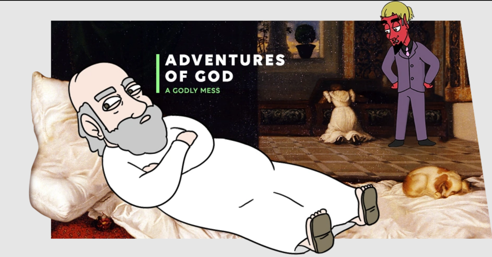

Batman needs a break. But with new vigilante Duke Thomas moving into Wayne Manor and an endless supply of adopted,
fostered, and biological superhero children to manage, Bruce Wayne is going to have his hands full. Being a father
can't be harder than being Batman, right?

Meet Gwendolyn – living proof that princesses don’t always have it all. See, although she lives in a castle and her
father is the King, Gwendolyn isn’t like a movie princess, or even a fairly-tale princess. She’s got a big heart,
but isn’t particularly attractive and doesn’t have a Disney-quality singing voice. But one night, she accidentally
stumbles upon the twisted world of the Cursed Princess Club, and her life will never be the same. Hexed and cast out,
the ladies of the club are just the people Gwendolyn needs to show her that just because she doesn’t “fit the mold” does
not mean she’s any less of a princess.

In this slice of (eternal) life, you'll meet God, visit Heaven and learn that what goes on behind the pearly gates isn't
exactly the way the good book describes it. For starters, it's a pretty unhealthy work environment - what with God's ginormous,
fragile ego and heavy drinking problem. The good news is that while heaven is a lot less holy than expected, it's much more hilarious too.